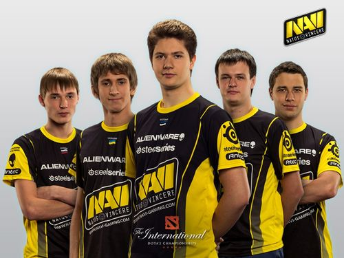

Команду створено 17 грудня 2009 року. Спершу команда виступала за підтримки українського проекту KerchNET, проте невдовзі цей проект припинив своє існування, після чого підтримку команді надав відомий меценат Мурат Жумашевич (Арбалет). Окрім того, команда змінила назву на «Arbalet.UA». 31 січня 2010 року Arbalet.UA перемагає на турнірі Arbalet Cup Asia 2010, двічі обігравши китайців з TyLoo та взявши гору над ForZe 16:5 (inferno) у фіналі. У лютому було оголошено конкурс на найкращу назву команди. На той час склад виступав під клан тегом «Arbalet.UA», а також «Na` Vi». Голосування відбувалося на сайті hltv.org, де було залишено більше 2000 коментарів. Переможцем став португалець Bruno «hArt1k» Estevens, який запропонував назву «Team Vincit», похідною від якого стала остаточна назва «Natus Vincere», що дозволило залишити тег «Na` Vi» без змін.
